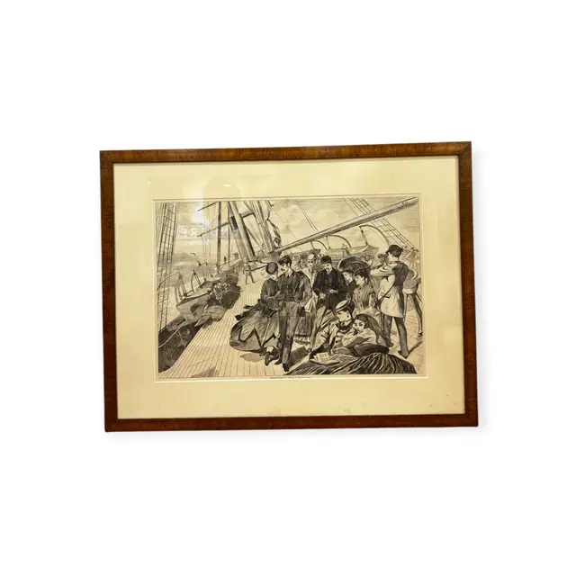
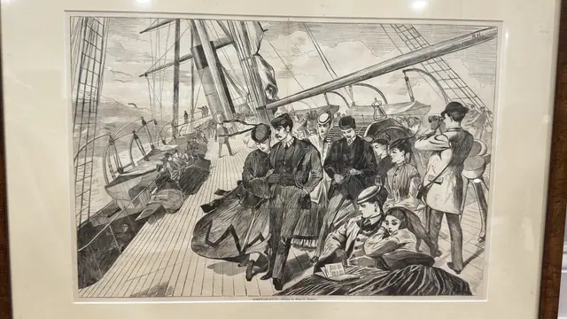
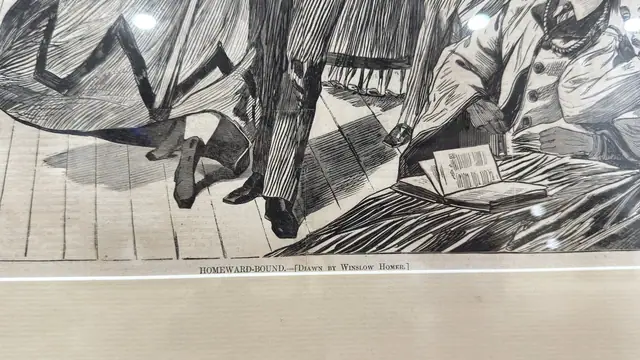
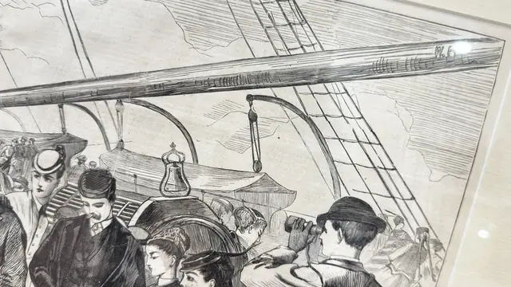

Paintings & Prints
Winslow Homer Homeward-Bound Wood Engraving, Signed, Framed
WINSLOW HOMER · third quarter of the 19th century
Price Upon Request




About the Item
WINSLOW HOMER. A black-and-white wood engraving of a crowded, canting deck: a bearded gentleman in a bowler walks arm in arm with a woman whose crinoline sweeps the planks, while behind them passengers cluster in bonnets and top hats, one man raising a spyglass. A great spar and a web of rigging cut diagonally across the upper half against a light cloudy sky, and at lower right two figures recline on a bench with a book. The image is built entirely of fine engraved line and cross-hatching, printed in dense black on cream wove paper. Medium: wood engraving on paper. Signed monogram cut into the block on the spar at upper right; the artist is also named in the printed caption, reading "W. F. (partially obscured by glare)". Inscribed on the reverse or mount: HOMEWARD-BOUND., [DRAWN BY WINSLOW HOMER.] , printed caption below the image; monogram in the block on the spar at upper right, reading approximately 'W. F.', partly hidden by a lamp reflection. Condition: Paper lightly toned with faint scattered spotting; no tears or losses visible. Strong lamp reflections on the glass in every shot.
Details
- Creator:
- WINSLOW HOMER
- Creation Year:
- third quarter of the 19th century
- Dimensions:
- Height: 21.75 in (55.24 cm)
Width: 28.75 in (73.03 cm)
outside of frame - Medium:
- wood engraving on paper
- Period:
- 19Th
- Condition:
- Offered in the condition shown in the photographs.
- Reference Number:
- VO-218
- Documentation:
- no certificate present
- Gallery Location:
- HOMEWARD-BOUND., [DRAWN BY WINSLOW HOMER.] , printed caption below the image; monogram in the block on the spar at upper right, reading approximately 'W. F.', partly hidden by a lamp reflection